z <- rnorm(500, mean = 2, sd = 3)Gaussian Process Fundamentals
Readings: [1, 2 (sections 1 - 4)], Code
Setup
Goal. Given data \(\{\left({\color{#7B5FB8}x_i, y_i}\right)\}_{i = 1}^{N}\) following a nonlinear \({\color{#D97706}f}\),
Predict \({\color{#2563EB}\hat{f}\left(x_{m}^{*}\right)}\) at test points \({\color{#D946A6}x_{1}^{\ast}, \dots, x_{M}^{\ast}}\).
Quantify associated prediction \({\color{#22A456}\text{uncertainties}}\).
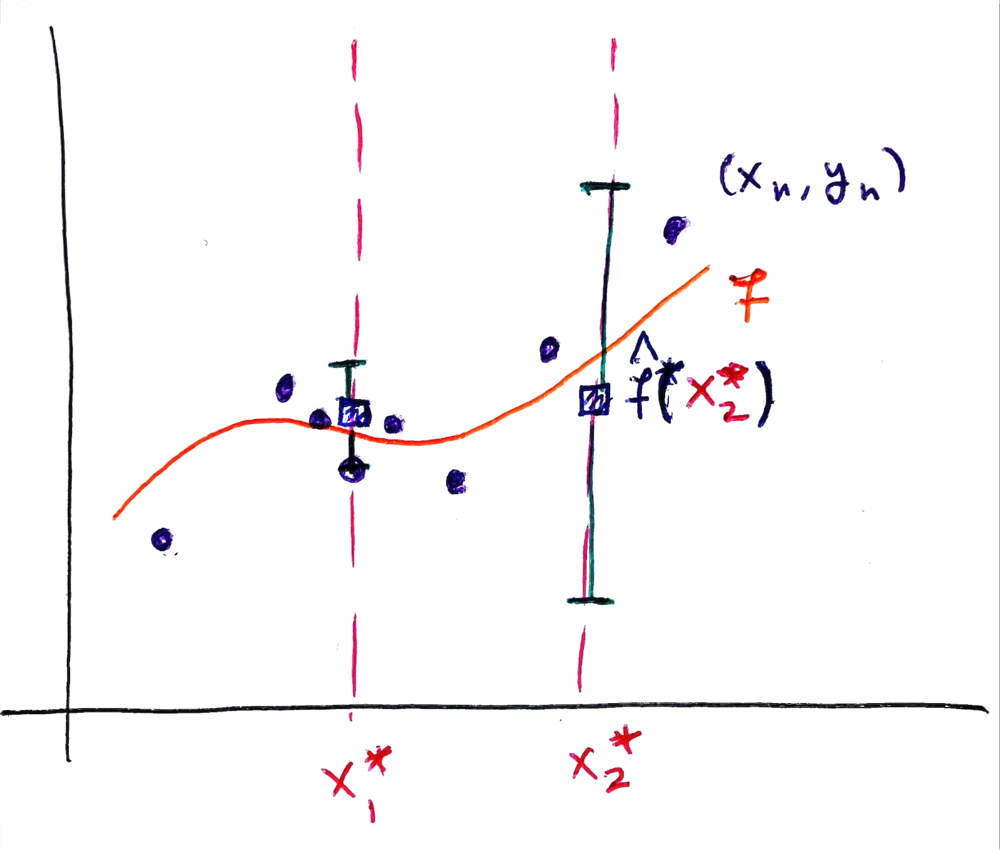
Requirements.
- Incorporate domain knowledge about the function (e.g., “the function is periodic”).
- Use interpretable hyperparameters (e.g., “p is the period”).
Approach. Encode domain knowledge in a probability distribution over functions. Before seeing data, we specify a “prior” representing plausible functions. After observing data \(\{(x_i, y_i)\}_{i=1}^N\), we update to a “posterior” that assigns high probability only to functions consistent with observations. This is an example of Bayesian inference.
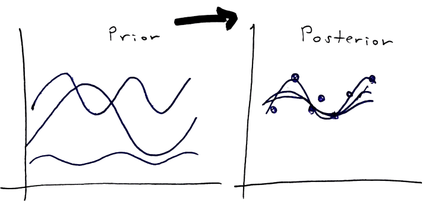
Multivariate Normal
1D case. \(\mathcal{N}\left(\mu, \sigma^2\right)\) with mean \(\mu\) and variance \(\sigma^2\).

2D case. \(\mathcal{N}(\boldsymbol{\mu}, \Sigma)\) where \(\boldsymbol{\mu} \in \mathbb{R}^2\) and \[\Sigma = \begin{bmatrix} \sigma_1^2 & \sigma_{12} \\ \sigma_{12} & \sigma_2^2 \end{bmatrix}\]
The diagonal controls spread in each direction and the covariance \(\sigma_{12}\) controls correlation: \(\rho = \sigma_{12}/(\sigma_1\sigma_2)\)
library(MASS)
mu <- c(0, 0)
Sigma <- matrix(c(1, 0.8, 0.8, 1), 2, 2)
z <- mvrnorm(n = 500, mu = mu, Sigma = Sigma)
2D Conditioning. If \((X_1, X_2) \sim \mathcal{N}(\boldsymbol{\mu}, \Sigma)\) and we observe \(X_1 = x_1\), then \(X_2 | X_1 = x_1\) is univariate normal with:
- Conditional mean: \(\mu_{2|1} = \mu_2 + \rho\frac{\sigma_2}{\sigma_1}(x_1 - \mu_1)\). The adjustment is \(\rho\) times \(x_1\)’s z-score, converted to \(X_2\) units.
- Conditional variance: \(\sigma_{2|1}^2 = \sigma_2^2(1 - \rho^2)\). Higher correlation means lower conditional variance (more certainty about \(X_2\) after seeing \(X_1\)).
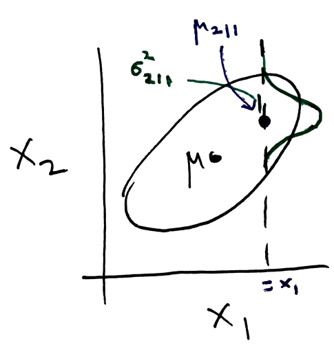
- D-dimensional case: \(\mathcal{N}(\boldsymbol{\mu}, \Sigma)\) where \(\boldsymbol{\mu} \in \mathbb{R}^D\) and \(\Sigma \in \mathbb{R}^{D \times D}\). Diagonal \(\sigma_{ii}^{2}\) controls each dimension’s spread. Correlation \(\rho_{ij} = \frac{\sigma_{ij}}{\sigma_{ii}\sigma_{jj}}\) between dimensions \(i\) and \(j\).
D <- 100
mu <- rep(0, D)
Sigma <- matrix(0.9, D, D)
diag(Sigma) <- 1
z <- mvrnorm(n = 20, mu = mu, Sigma = Sigma)
- General conditioning. Partition variables into \(\mathbf{X}_A\) (unobserved) and \(\mathbf{X}_B\) (observed). Then \(\mathbf{X}_A | \mathbf{X}_B = \mathbf{x}_B\) is multivariate normal with:
- Mean: \(\boldsymbol{\mu}_{A|B} = \boldsymbol{\mu}_A + \Sigma_{AB}\Sigma_{BB}^{-1}(\mathbf{x}_B - \boldsymbol{\mu}_B)\).
- Covariance: \(\Sigma_{A|B} = \Sigma_{AA} - \Sigma_{AB}\Sigma_{BB}^{-1}\Sigma_{BA}\)
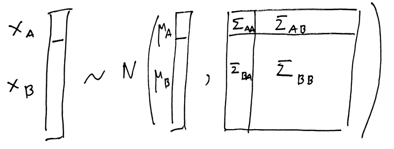
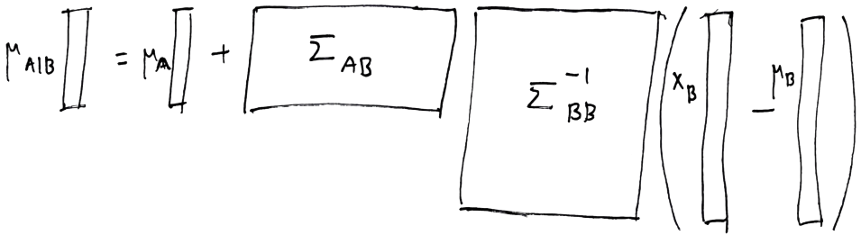
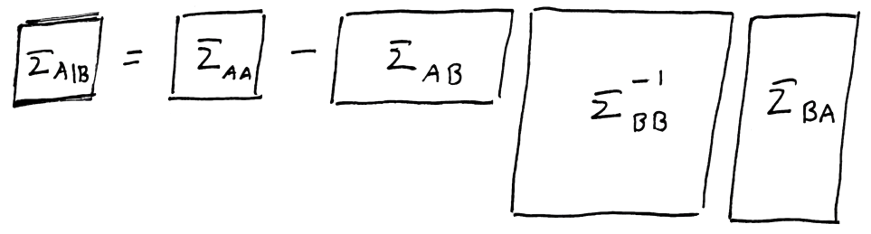
Structured Priors
Suppose we want to simulate smooth random functions \(f^*\) evaluated at \(0, 0.01, \ldots, 0.99\). We represent the function as a 100-dimensional vector: \[\mathbf{f}^* = [f^*(0), f^*(0.01), f^*(0.02), \ldots, f^*(0.99)]^\top\] Each grid point corresponds to one dimension. So \(f^*(0)\) is dimension 1, \(f^*(0.01)\) is dimension 2, etc.
Idea 1: Constant Correlation. Sample \(\mathbf{f}^* \sim \mathcal{N}(0, \Sigma)\) with constant correlation \(\rho_{ij} = \rho\) for all off-diagonal pairs.
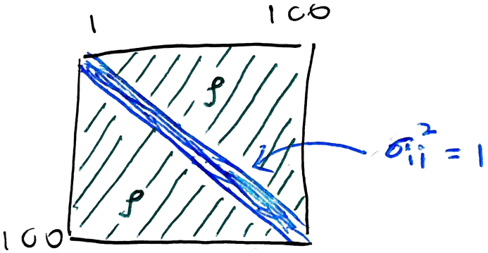
- If \(\rho = 0\): all points are independent, giving white noise.
- If \(\rho = 0.99\): all points move together, giving nearly flat functions.

Idea 2: Block Correlation. Divide the grid into blocks. Within each block, set high correlation (e.g., \(\rho = 0.99\)). Between blocks, no correlation. Looks better but still not smooth.
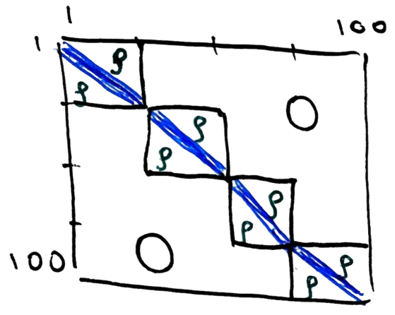

Exercise: How would the plot change if we had not used the same correlation within each block?
Idea 3: Distance-based correlation: Let correlation decay with distance. For evaluation points \(x, x'\) (at indices \(i, j\) in \(\mathbf{f}^{\ast}\)), set: \[\sigma_{ij} = k(x, x') = \exp\left[-\frac{1}{2}(x - x')^2\right]\]
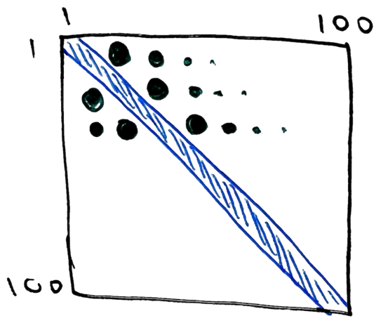
Nearby points have high correlation; distant points nearly independent.
x <- seq(0, 0.99, by = 0.01) D <- length(x) K <- matrix(0, nrow = D, ncol = D) for (i in seq_len(D)) { for (j in seq_len(D)) { K[i, j] <- exp(-0.5 * (x[i] - x[j])^2) } } z <- mvrnorm(n = 20, mu = rep(0, D), Sigma = K)
We have simulated our first GP!
Kernel Functions
The function \(k(x, x')\) is called a kernel and encodes our domain knowledge about the function we want to learn.
Smooth trends. The example above is an example of an RBF kernel with \(\sigma_{f} = \ell = 1\). \[k_{\text{RBF}}(x, x') = \sigma_f^2 \exp\left(-\frac{(x - x')^2}{2\ell^2}\right)\]
Periodic behavior. \[k_{\text{per}}(x, x') = \sigma_f^2 \exp\left(-\frac{2}{\ell^2}\sin^2\left(\frac{\pi|x-x'|}{p}\right)\right)\]
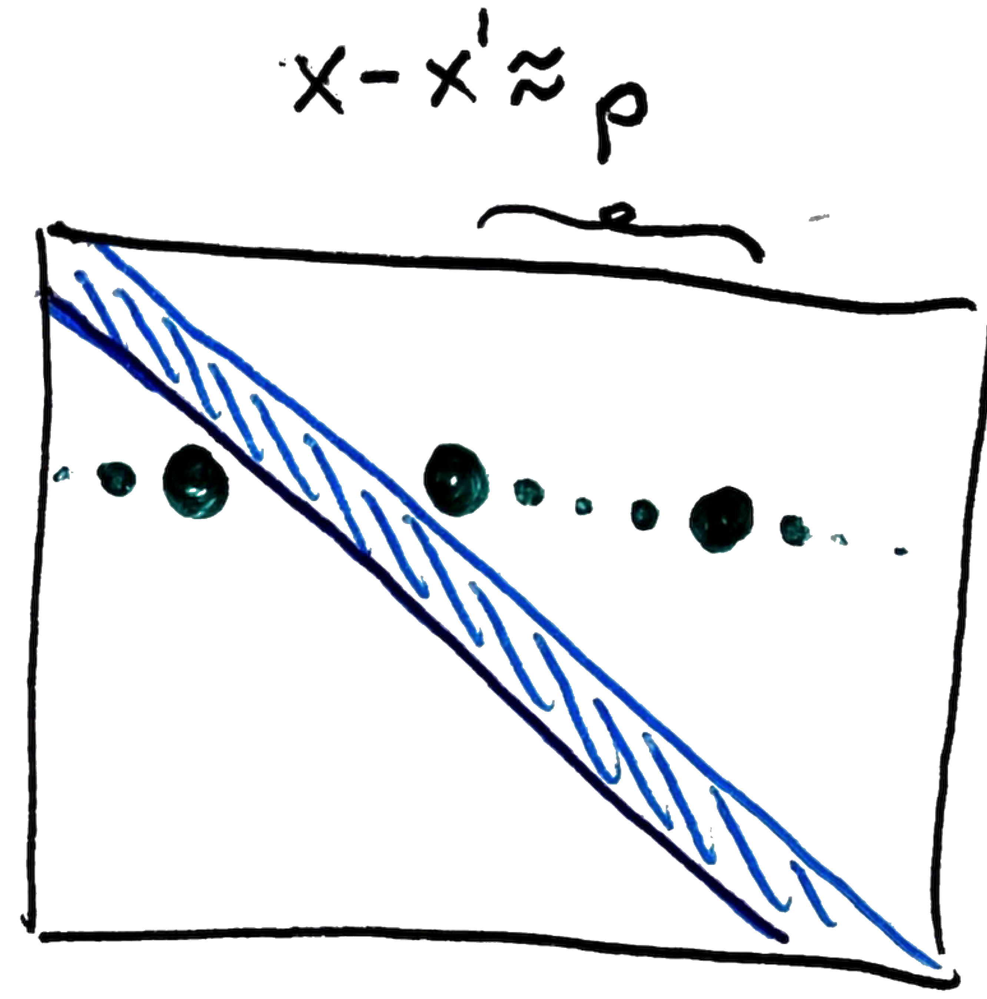
Note that \(k_{\text{per}}\left(x, x'\right)\) peaks at distances that are multiples of \(p\). If we substitute this code into our earlier snippet, we get periodic curves.
K[i, j] <- exp(-2 * sin(pi * abs(x[i] - x[j]) / 0.2)^2)
- The reading gives formulas for other kernels that encode prior knowledge about linearity and non-differentiability.
The kernel hyperparameters encode domain knowledge,
- \(\ell\): lengthscale (controls smoothness)
- \(\sigma_f^2\): overall function variance
- \(p\): period
We can define new kernels through addition and multiplication. For smooth + periodic behavior: \[k_{\text{fancy}}(x, x') = k_{\text{RBF}}(x, x') + k_{\text{per}}(x, x')\] The associated functions reflect both types of domain knowledge:

Exercise: Change the length scale \(\ell\) in the snippet above. Plot the resulting functions. How do they change?
To summarize, once we define a kernel, it specifies a Gaussian Process prior over functions consistent with that kernel: \[f \sim \mathcal{GP}(0, k(x, x'))\]
Updating from Data
Suppose we want to predict \(\hat{f}\left(x^*\right)\) at a specific \(x^*\). We are given observations \(y_1, \ldots, y_N\) at \(x_1, \ldots, x_N\). We assume \(y_{i}\) are noisy observations, \[\begin{align} y_i &= f(x_i) + \varepsilon_i, \quad \varepsilon_i \sim \mathcal{N}(0, \sigma_n^2)\\ f &\sim \mathcal{GP}(0, k(x, x')) \end{align}\]
The main idea is to use conditioning. Stack the unknown \(f(x^*)\) with observations \(\mathbf{y} = [y_1, \ldots, y_N]^\top\). It turns out that this has an \(N + 1\)-dimensional multivariate normal distribution,
\[\begin{bmatrix} f(x^*) \\ \mathbf{y} \end{bmatrix} \sim \mathcal{N}\left(\mathbf{0}, \begin{bmatrix} k(x^*, x^*) & \mathbf{K}_* \\ \mathbf{K}_*^\top & \mathbf{K} + \sigma_n^2\mathbf{I} \end{bmatrix}\right)\]
where:
- \(\mathbf{K}_*\): row vector with entries \(k(x^*, x_i)\) (similarity of \(x^*\) to training points)
- \(\mathbf{K}\): \(N \times N\) matrix with entries \(K_{ij} = k(x_i, x_j)\) (training point similarities)
- \(\sigma_n^2\mathbf{I}\): observation noise
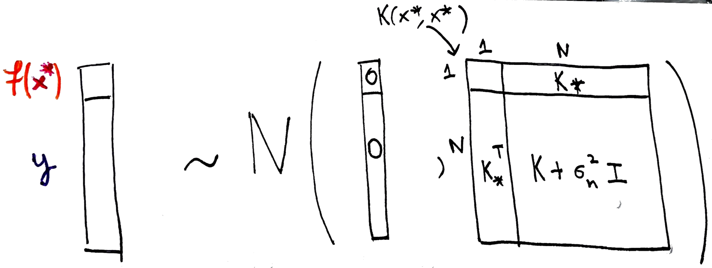
We make predictions using the conditional mean of the first coordinate given the rest. Plugging in \(\mathbf{X}_{A} = f\left(x^\ast\right)\) and \(\mathbf{X}_{B} = \mathbf{y}\) into our earlier conditioning formula yields, \[\mu_* = \mathbf{K}_*(\mathbf{K} + \sigma_n^2\mathbf{I})^{-1}\mathbf{y} \tag{1}\]
This is a weighted average: training points similar to \(x^*\) get higher weight.
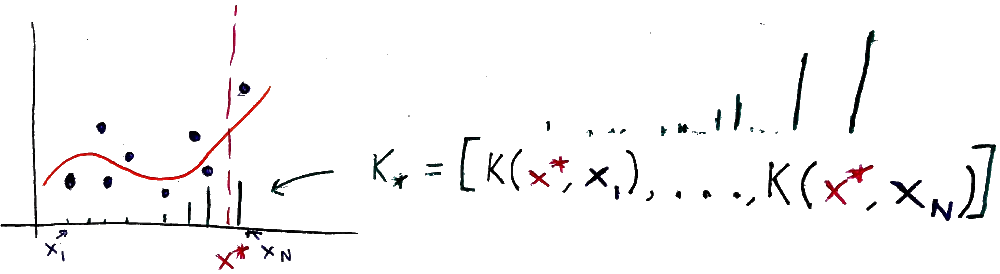
For \(M\) test points \(\mathbf{f}_* = [f(x_1^*), \ldots, f(x_M^*)]^\top\), we apply the same conditioning approach but now need to track correlations among the test points with one another:
\[\begin{bmatrix} \mathbf{f}_* \\ \mathbf{y} \end{bmatrix} \sim \mathcal{N}\left(\mathbf{0}, \begin{bmatrix} \mathbf{K}_{**} & \mathbf{K}_* \\ \mathbf{K}_*^\top & \mathbf{K} + \sigma_n^2\mathbf{I} \end{bmatrix}\right)\]
where:
- \(\mathbf{K}_{**}\): \(M \times M\) matrix with entries \((\mathbf{K}_{**})_{ij} = k(x_i^*, x_j^*)\) (test point similarities)
- \(\mathbf{K}_*\): \(M \times N\) matrix with entries \((\mathbf{K}_*)_{ij} = k(x_i^*, x_j)\) (test-to-training similarities)
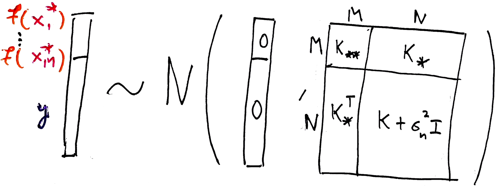
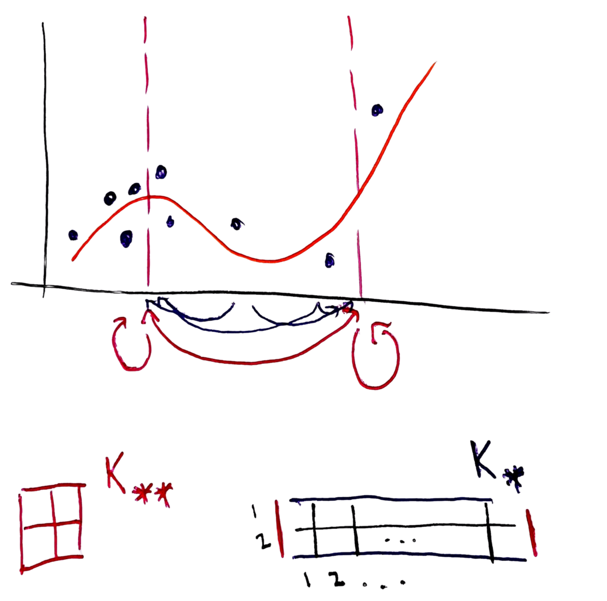
Applying the conditioning formula gives Equation 1 again, but now \(\mathbf{K}_*\) is a matrix, so \(\boldsymbol{\mu}_*\) is a vector with one entry for each of the test locations \(x_{1}^{\ast}, \dots, x_{M}^{\ast}\).
Exercise:
- TRUE FALSE If we increase \(\sigma_n^2\), then the predictions \(\mu_*\) will give more weight to the prior mean and less weight to the observations.
- TRUE FALSE If two training points \(x_1\) and \(x_2\) are very close together, the entries \(\left(\mathbf{K}\right)_{12}\) and \(\left(\mathbf{K}\right)_{21}\) will both be close to 0.
Quantifying Uncertainty
At the start, we mentioned that our goal wasn’t just to make predictions at \(x_{1}^{*}, \dots, x_{M}^{*}\) but also to report the associated uncertainties. Recall from the bivariate case that conditioning gave us both a mean and a variance. The variance tells us how much uncertainty remains after observing \(X_1\). The same is true here: the conditioning formula also gives a covariance matrix that quantifies our uncertainty about \(\mathbf{f}_*\) after observing \(\mathbf{y}\).
Specifically, the conditional covariance formula yields: \[ \boldsymbol{\Sigma}_{*} = \mathbf{K}_{**} - \mathbf{K}_{*}(\mathbf{K} + \sigma_n^2\mathbf{I})^{-1}\mathbf{K}_{*}^\top \]
- \(\mathbf{K}_{**}\) is the covariance before we collect any data.
- The subtracted term \(\mathbf{K}_{*}(\mathbf{K} + \sigma_n^2\mathbf{I})^{-1}\mathbf{K}_{*}^\top\) describes the uncertainty reduction from conditioning.
- The diagonal entries give the conditional variance at each test location: \(\text{Var}(f(x_i^*) | \mathbf{y})\).
Exercise: TRUE FALSE The uncertainty \(\text{Var}(f(x^*) | \mathbf{y})\) will generally be smaller for test points \(x^*\) that are near observed training points than for test points far from any training data.
Code Example
Observe 10 noisy points from a quadratic:
x_obs <- runif(10) sigma_n <- 0.1 y_obs <- 3 * (x_obs - 0.5)^2 - 0.5 + rnorm(10, 0, sigma_n) N <- length(x_obs)
Define test grid and covariances:
x <- seq(0, 0.99, by = 0.01) D <- length(x) # K_{**}: test-test similarities K <- matrix(0, nrow = D, ncol = D) for (i in seq_len(D)) { for (j in seq_len(D)) { K[i, j] <- exp(-0.5 * (x[i] - x[j])^2) } } # K_*: test-training similarities K_star <- matrix(0, nrow = D, ncol = N) for (i in seq_len(D)) { for (j in seq_len(N)) { K_star[i, j] <- exp(-0.5 * (x[i] - x_obs[j])^2) } } # K: training-training similarities K_obs <- matrix(0, nrow = N, ncol = N) for (i in seq_len(N)) { for (j in seq_len(N)) { K_obs[i, j] <- exp(-0.5 * (x_obs[i] - x_obs[j])^2) } }Apply conditioning formulas:
mu_cond <- K_star %*% solve(K_obs + sigma_n^2 * diag(N)) %*% y_obs Sigma_cond <- K - K_star %*% solve(K_obs + sigma_n^2 * diag(N)) %*% t(K_star) var_cond <- diag(Sigma_cond) # defines ribbon width
Sample posterior functions:
f_post <- mvrnorm(n = 20, mu = mu_cond, Sigma = Sigma_cond)
The greta.gp package makes this much simpler. For example, we can evaluate the kernel along a grid of values.
library(greta.gp) kernel <- rbf(lengthscales = .5, variance = 1) kernel_values <- calculate(kernel(0, x))[[1]] plot(x, kernel_values[1, ], type = "l")
We can sample from the prior.
f <- gp(x, kernel)f_proj <- project(f, x) prior_samples <- calculate(f_proj, nsim = 5)$f_proj[,,1] matplot(x, t(prior_samples), type = "l", lty = 1)
We can also condition on observations
x_obsandy_obs.kernel <- rbf(lengthscales = 1, variance = 1) f_obs <- gp(x_obs, kernel) distribution(y_obs) <- normal(f_obs, sigma_n) f_test <- project(f_obs, x) m <- model(f_test) draws <- mcmc(m, n_samples = 500)mu_cond <- colMeans(draws[[1]]) Sigma_cond <- cov(draws[[1]]) var_cond <- diag(Sigma_cond) # defines ribbon width